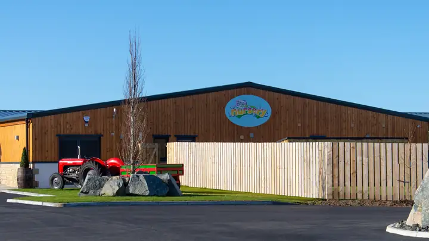

Visit and join
Come and see the nursery, then join our waiting list. You can register at any time of year if we have space.

Book a visit
The best way to choose a nursery is to see it. Phone or email us to book a time to visit.
When you visit, ask about anything that matters to you. Parent Club suggests asking about:
- who your child's key worker would be
- the daily routine, food and sleep
- time outdoors
- staff ratios and qualifications
- how we keep in touch with you each day
Join the waiting list
If we have no space when you want to start, we offer places from our waiting list, first come, first served.
To join, phone or email us. It helps if you tell us:
- your name, phone number and email
- your child's first name and date of birth (or due date)
- when you would like them to start
- the days or half days you want
Please do not send health or allergy details yet. We ask for those when your child registers.
Settling in
Settling in usually takes only a few sessions.
Your first day
You are introduced to the staff and shown around. You also finish the enrolment paperwork.
A short first stay
Most children stay for only a short time on their first day.
Build up together
We work with you to build up slowly to your child's full session.
Their key worker
Your child is given a key worker. Tell them anything that will help your child settle.
One of our 13 early years practitioners or room leads
“The staff are so welcoming and settled both of our nerves those first few weeks with care and kindness.”
What to bring
We are outside in all weathers, so dress your child in comfortable clothes that wash easily.
Every day
- wellies
- a warm jacket
- safe shoes (no open toes)
- spare clothes and shoes
- nappies or formula milk, if your child uses them
To leave with us
- 2 sachets of Calpol, for emergencies
- a sun hat and sun cream
Please label everything. Leave toys at home so they do not get lost.
Starting with funded hours
Children can usually get funded hours from the term after their 3rd birthday. You apply through South Ayrshire Council, which sets the exact dates.
| Birthday | Usual start |
|---|---|
| 1 March to 31 August | August |
| 1 September to 31 December | January |
| 1 January to end of February | March or April |
Source: mygov.scot, checked 13 October 2026.
Our inspection grades
Care Inspectorate. Inspected on 30 March 2022. Grades published on 5 August 2022.
- How good is our care, play and learning?4Good
- How good is our setting?4Good
- How good is our leadership?4Good
- How good is our staff team?4Good
Grades go from 1 (unsatisfactory) to 6 (excellent).
Find us
Heads of Ayr Nursery
Dunure Road
Alloway by Ayr
South Ayrshire
KA7 4LD
We are next to Heads of Ayr Farm Park, with our own car park and driveway.
Questions about joining
Do you have places now?
Phone to check. Places depend on your child's age and the days you need.
What is the youngest age you take?
Our rooms are for children aged 2 to 5. Phone to check for a younger child.
What is the fewest days my child can come?
Our minimum is 2 full days a week. Phone to check if this applies to your child's age.
Is there a booking fee?
- Starting within 3 months
- £30
- Reserving up to 6 months ahead
- £60
- Children 3 and over using funded hours
- No fee
The booking fee is not refundable. Reserving more than 6 months ahead may cost more. Phone to check.
When do fees start?
Your contract and billing start on your child's start date.
Can my child have extra support?
Yes. Tell us before your child starts and we will plan with you and any professionals involved.
Come and see us
Look round the nursery and meet the team.
Phone us on 01292 388456.